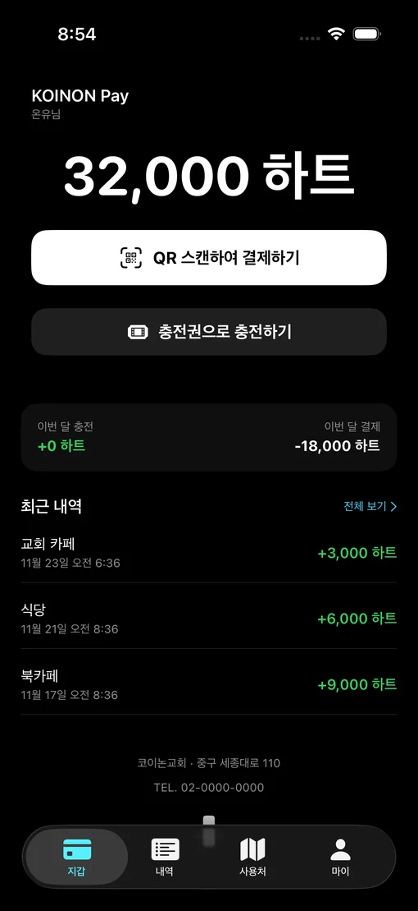
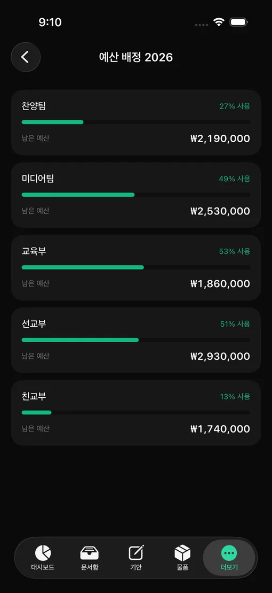
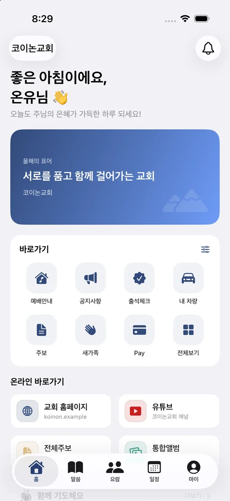

코이논교회 시연 화면
교회에서 이렇게 씁니다.
코이논 요람
이번 주 주보를
홈에서 바로.
주일 아침에 필요한 주보와 예배 일정, 교회 공지를 코이논 요람에서 열어보세요.
- 예배 준비
- 홈에서 주보 PDF를 열고, 말씀 탭에서 지난 예배 영상을 찾아요.
- 교인 명부
- 교구와 구역을 따라 성도 카드를 열고, 마이에서 내 정보를 관리해요.
- 교회 소식
- 공지와 일정을 확인하고 새가족 등록 안내를 볼 수 있어요.
코이논페이
예배 뒤 카페 결제,
지갑에서 내역까지.
교회 안에서 쓸 수 있는 곳을 찾고, 지갑에서 결제를 마친 뒤 내역을 확인할 수 있어요.
- 결제와 내역
- 결제 전에 잔액을 보고, 완료한 결제는 내역에서 다시 확인해요.
- 사용처 지도
- 영업 상태를 보고, 자주 가는 곳에 별을 눌러 지갑에서 바로 열어요.
- 충전과 쿠폰함
- 충전권은 바로 사용하거나 쿠폰함에 보관할 수 있어요.
PassBill
장비를 사기 전에
남은 예산부터.
부서별로 얼마를 배정받고 얼마를 썼는지, 다음 지출에 쓸 수 있는 예산이 얼마인지 확인할 수 있어요.
- 예산과 지출
- 부서별 잔액을 비교하고, 월별로 지출이 몰린 시기를 확인해요.
- 결의서와 결재
- 품목을 적어 올리고, 사역장 승인부터 재정부 확인까지 결재선에서 봐요.
- 문서와 물품
- 승인된 문서를 다시 찾고, 장비의 보증 기한과 폐기 상태를 확인해요.
우리 교회에 맞는 앱이 궁금하신가요?
지금 쓰는 주보·교인 명부·결제·예산 관리 방식과 관심 있는 앱을 알려주세요.